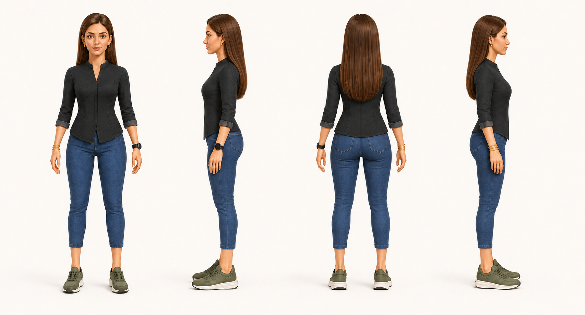

מנהלת ענף מזון, אמא ל-3 — ובנתה סוכן AI ראשון.
מריאנה. מנהלת את ענף המזון בקיבוץ שער העמקים מ-2018 — צוות של כ-40 עובדים, מחזור שנתי של כ-11 מיליון ש"ח. הגיעה לתפקיד לא מרקע טכני, אלא מניהול אדמיניסטרטיבי — למדה מהתבוננות עד שהפכה להכרחית. אותה גישה הביאה גם לבניית עמית.
זו עמית. נוצרה במהלך 8 מפגשי הקמה. לא עוזרת — שותפה. ישירה, לא מחניפה: אם משהו נראה לה לא נכון, היא אומרת את זה. יודעת להגיד "אני לא יודעת" במקום להמציא. ונותנת למריאנה את הדחיפה שהיא עצמה ביקשה — כי גם מי שיש לה מוטיבציה גבוהה, לפעמים צריכה מישהי שתדחוף אותה קדימה.